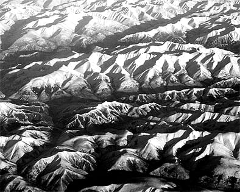

mountains
建築における床の新しい形を表現した、コンセプトプロジェクト。
山が「自分の住む街」と「山の向こう側の街」を気候的にも空間的にも緩く分節するように、山の形態を引用した床によって、空間を緩やかに分節します。
起伏の激しい部分ではフロアとフロアが近づき、断面方向的にも繋がったり離れたりします。



建築における床の新しい形を表現した、コンセプトプロジェクト。
山が「自分の住む街」と「山の向こう側の街」を気候的にも空間的にも緩く分節するように、山の形態を引用した床によって、空間を緩やかに分節します。
起伏の激しい部分ではフロアとフロアが近づき、断面方向的にも繋がったり離れたりします。
